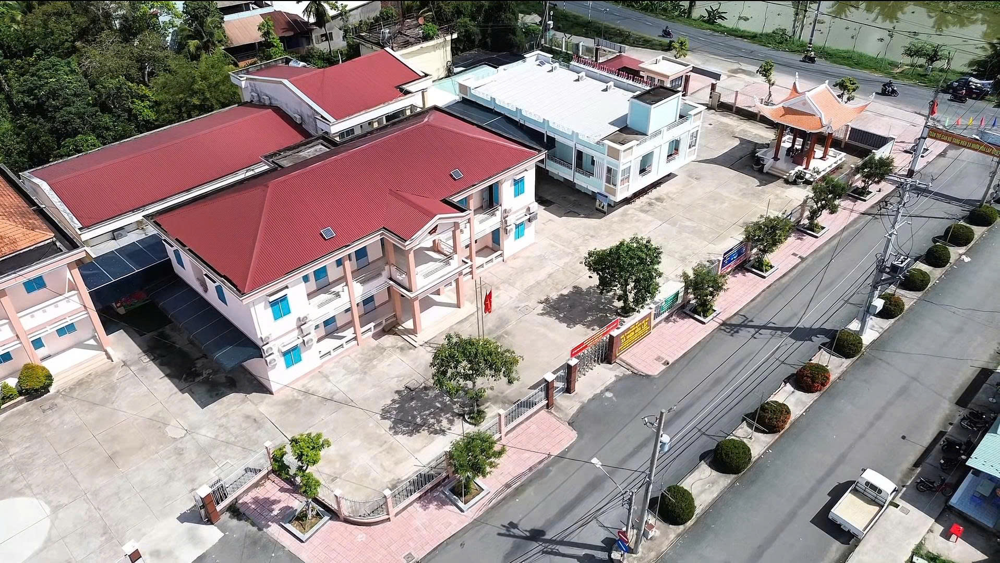

Tri ân · Tưởng nhớ
Ghi danh liệt sĩ, Bà mẹ Việt Nam anh hùng và Anh hùng lực lượng vũ trang của xã. Tìm tên người thân, đồng đội để thắp nén tâm nhang tưởng nhớ.
cuộn xuốngDi tích lịch sử
Giai đoạn 1946 – 1949. Nơi ghi dấu một chặng đường kháng chiến của quân và dân Nam Bộ. Mỗi lối đi, mỗi mái nhà nơi đây gợi nhắc thế hệ hôm nay về truyền thống cách mạng của quê hương.
Xem không gian 3DQuê hương hôm nay
Nơi chính quyền và nhân dân xã Nhơn Hòa Lập tiếp nối truyền thống, chăm lo công tác đền ơn đáp nghĩa và xây dựng quê hương ngày càng giàu đẹp.
Xem thống kê
Công trình
Quan sát mô hình và video giới thiệu công trình bia tưởng niệm xã Nhơn Hòa Lập.
Mô hình tương tác: kéo chuột để quan sát công trình.
Video phối cảnh 3D công trình bia tưởng niệm.
Thống kê
Tra cứu
Tri ân
Uống nước nhớ nguồn
Tri ân các anh hùng, liệt sĩ đã hy sinh vì độc lập, tự do của Tổ quốc